Mars Rover on Uneven Terrain
This example shows a six-wheeled autonomous vehicle driving on uneven terrain. The vehicle has a robotic arm that collects a sample from the ground and inserts it into a storage compartment onboard the vehicle. The powertrain can be modeled with ideal actuators or with an electrical network.
See documentation for workflows shown in this example:
Contents
Model

Rover Subsystem

Chassis Subsystem
Arm Subsystem
Terrain Subsystem
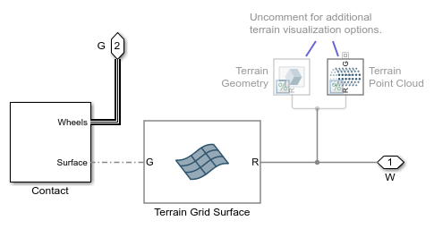Simulation Results from Simscape Logging: Path 1
This shows the results for path 1 where the rover is driven with an ideal torque sources on uneven terrain.
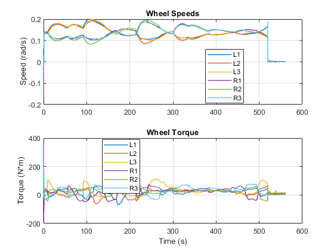 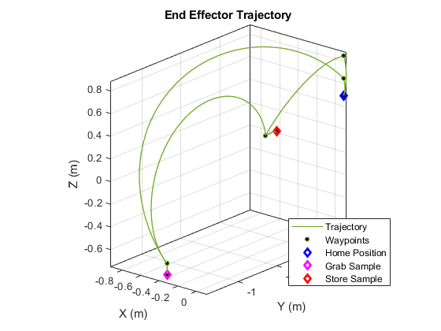Simulation Results from Simscape Logging: Path 2
This shows the results for path 2 where the rover is driven with an ideal torque sources on uneven terrain. The destination is the same but the rover approaches from a different side. The terrain elevation and position at the sample is different from path 1. The inverse kinematic algorithm uses the measured position of the sample relative to the rover to find joint angles that will permit the sample to be obtained.
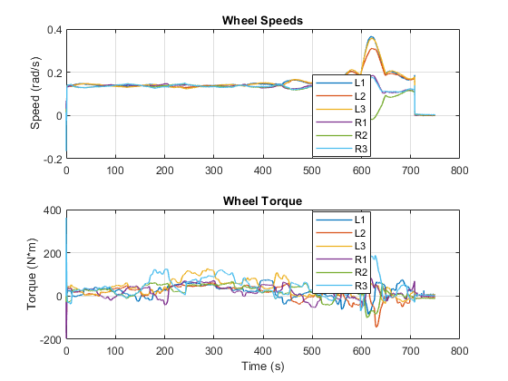Simulation Results from Simscape Logging: Path 2, Flat
This shows the results for path 2 where the rover is driven with an ideal torque sources on flat terrain. To simplify the test, we put the rover on flat ground, but follow the same x-y trajectory as the previous test. We can see the difference in wheel torques.
 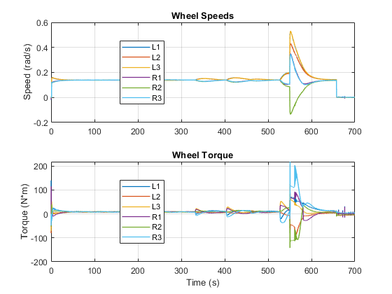 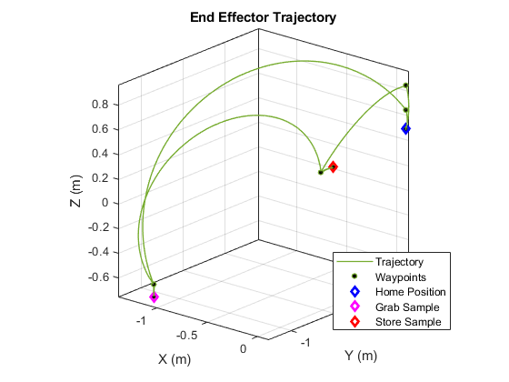
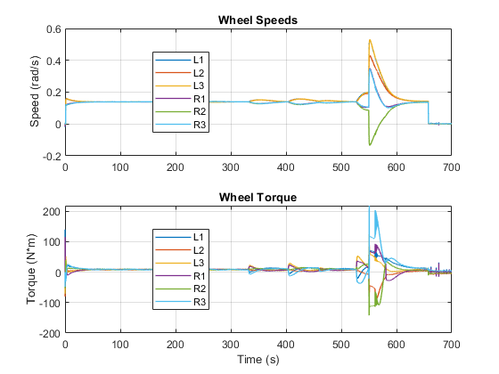 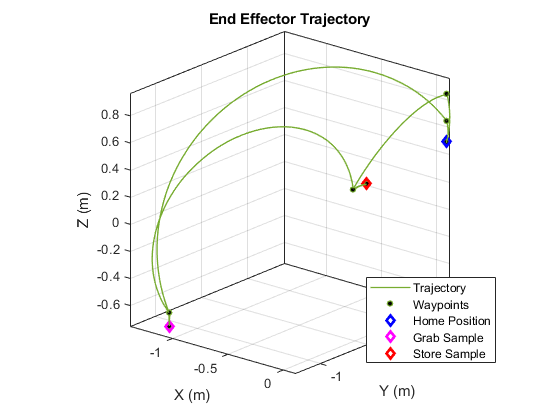 Simulation Results from Simscape Logging: Path 2 Electrical
The model is configured to model the electrical system of the powertrain, including 6 motors for propulsion and 4 motors for steering. The results of the simulation include the current drawn by the motors as it follows path 2.
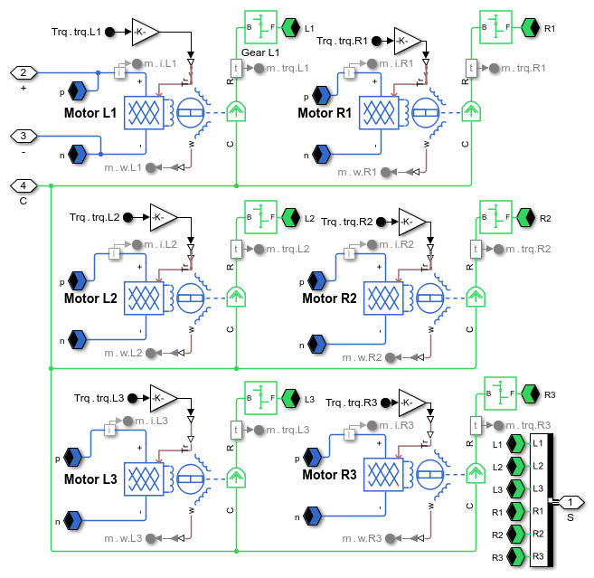 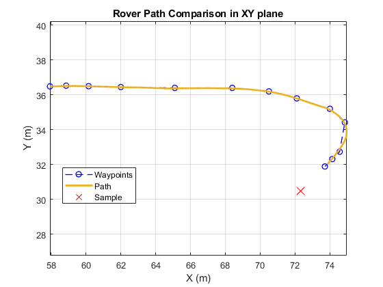 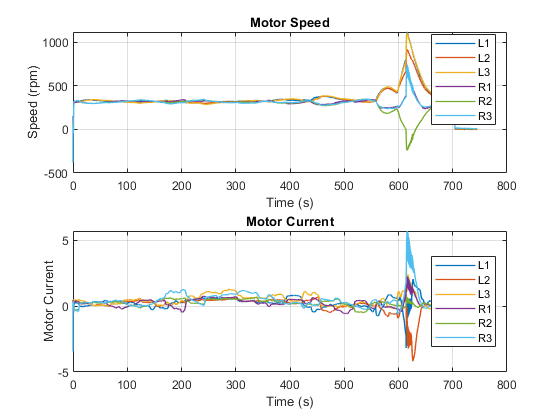 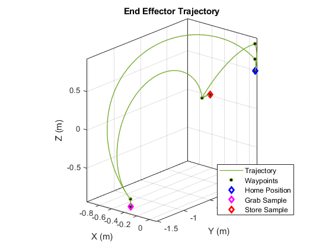